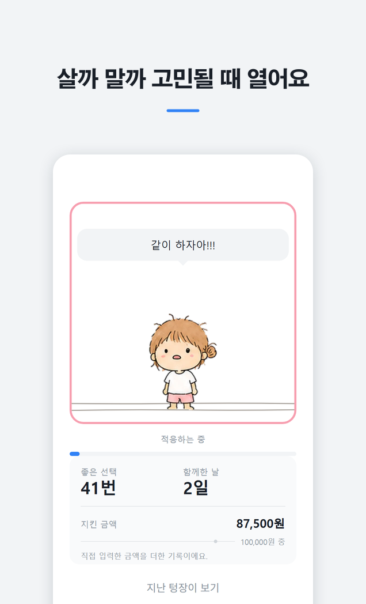
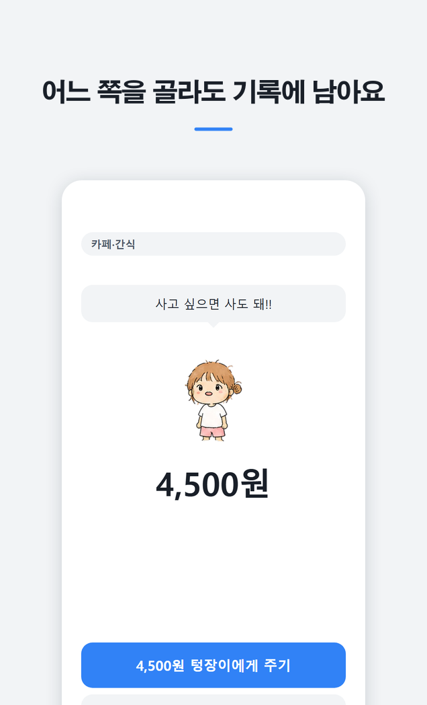

텅장수호자 · 토스 미니앱
살까 말까 고민될 때
여는 기록장
커피 한 잔, 택시 한 번. 꼭 필요한지 애매한 소비 앞에서 잠깐 열어보세요.
안 쓰는 쪽을 고르면 그 금액이 지킨 금액으로 쌓이고, 함께 지내는 캐릭터가 조금씩 자라요.
한 번 쓰는 데 30초면 충분해요.
토스에서 열기
토스 앱이 설치된 휴대폰에서 눌러주세요
앱이 열리지 않았나요? 이 서비스는
토스 앱 안에서 동작해요.
토스를 설치한 뒤 다시 눌러주시거나, 토스 앱에서
전체 → 검색에
‘텅장수호자’를 검색해 주세요. ·
토스 홈페이지


이런 앱이에요
- 카테고리와 금액을 고르면 쓰는 쪽 / 안 쓰는 쪽 두 선택지가 나와요
- 어느 쪽을 골라도 기록에 남고, 잘못된 선택으로 표시하지 않아요
- 기록이 쌓이면 캐릭터 모습이 달라져요. 45칸을 채우면 독립해요
- 실제 자금 이동이나 금융기관 연동이 없어요. 직접 입력한 금액을 기록으로만 보여드려요
- 결제 기능이 없고, 아이템은 전부 무료예요